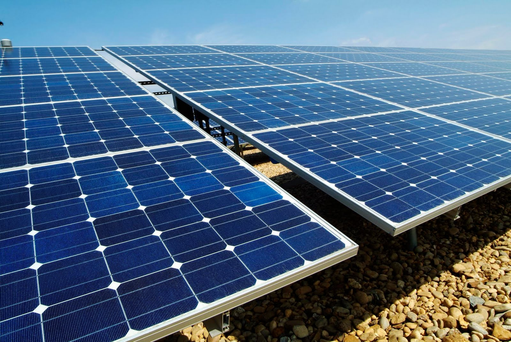

Energia Solar
Mesmo com os preços dos painéis solares solares em queda, a disputa comercial entres os principais mercados solares e empresas falindo, o Brasil dá os primeiros passos no mercado solar e já começa a atrair interesse dos players internacionais, já que o alto nível de insolação permite baratear o custo da energia solar dispensando subsídios que a viabilizaram e tecnologia na Europa.
Por isso, não é por acaso, que este ano – quando começa a ser implementada a norma da Aneel que permite a microgeração com a venda de enegria para a rede – um dos principais veículos de comunicação de tecnologias limpas (cleantech) da Europa, a revista Cleantech Investor Magazine, organizou um e vento sobre energia solar, o BSEC em São Paulo.
Segundo a editora chefe, Anne McIvor, o momento é oportuno e Brasil tem uma grande oportunidade nas mãos. Anne organizou o evento para, além de abordar a energia eólica e solar de grande porte, ter um dia inteiro dedicado à geração de energia de pequeno porte.
Segundo Anne e seu correspondente de energia solar Dennis Gross, existem dois movimentos no mercado solar Brasileiro. O principal é a entrada fabricantes e fornecedores de painéis solares visando o mercado de geração distribuída, ou micro e mini geração até 1MW, potencializado pela portaria da Aneel.
O outro é o de grande porte, que já conta com a entrada da alemã E.ON, que fechou parceria coma EPX do Eike Batista em Tauá no Ceará.
Como observadores especializados de fora, eles vislumbram que em breve os grande edifícios brasileiros com painéis solares, que podem até chegar a ter porte médio, já a insolação média no Brasil dispensa política de subsídios e o torna geração solar atraente.
